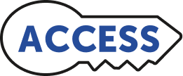

Develop Language: Use Pronouns
STANDARDS PLACEHOLDERSet Purpose
Today, we will continue to learn about using pronouns. Remember that when we write our stories in this unit, we will pretend to be animals telling our stories. Using pronouns correctly will help us write these stories.
- Display and read aloud the Student Learning Outcomes.
Practice Using Pronouns (5 MIN.)
When we write our stories in this unit, we are going to pretend to be animals telling our stories! We can use the pronoun I to show that we are pretending to be an animal.
Let’s pretend to be some of the animals we saw in the Unit 2 Introduction Video. When I pause the video, we will pretend to be the animal we see, saying who we are and what we need to grow and survive.
- Display the Unit 2 Introduction Video. Play the video, pausing at the giraffe (0:38).
- Model saying two connected sentences, such as: I am a giraffe. I need a snack!
 Cross-Linguistic Connections: Review Similarities and Differences. between the use of pronouns in students’ home languages and English.
Cross-Linguistic Connections: Review Similarities and Differences. between the use of pronouns in students’ home languages and English.
- Have students repeat the sentences while pretending to be a giraffe by stretching their necks and pretending to eat leaves from a tree.
- Continue to play the video, pausing at the elephants (0:46).
These elephants need a big sip of water! Stand up and pretend to be an elephant, using your trunk to get some water.
- Have students use the Turn and Talk Protocol to respond to the prompt: Who are you? What do you need? (Sample response: I am an elephant; I need a sip of water.)
- Play the video to the end. Then, have students pretend to be an animal they chose. Have students use the Turn and Talk Protocol to respond to the prompt: Who are you? What do you need? (Sample responses: I am a baby duck. I need a drink; I am a chimpanzee [or monkey]. I need a snack; I am a bird. I need my lunch.)
- Circulate to observe students’ interactions. Refer to the Formative Assessment section of the lesson for Listen and Look Fors.
Explore Pronouns (8 MIN.)
We will use the pronouns I and my to say and write sentences pretending to be different squirrels from the story we read today, Squirrel’s Family Tree.
 We use personal pronouns in English and Spanish in the same way. How do we say I and my in Spanish? (yo, mi)
We use personal pronouns in English and Spanish in the same way. How do we say I and my in Spanish? (yo, mi)
 Make Meaning: Provide opportunities for meaning-making using Gestures, Visuals, and Sentence-Level Context.
Make Meaning: Provide opportunities for meaning-making using Gestures, Visuals, and Sentence-Level Context.
- Display pages 24–25 of Squirrel’s Family Tree.
- Choose volunteers to respond to the question:
Baby squirrels are called pups. What do you notice about these pups? (Sample responses: I notice that the pups are in a nest; I notice that the pups are sleeping; I notice that the pups are snuggling with each other.)
These little pups are so cute, all snuggled in their nest! I’m going to pretend to be one of these pups. I’ll say a sentence to tell what I do to grow and survive:
I sleep in my cozy nest.
- Have students use the Turn and Talk Protocol to respond to the prompt:
Now, it's your turn to pretend to be one of these pups. What do you do in your nest? You can say the same sentence I said, or you can think of another way to tell what you do, using a word like nap or rest. Remember to use the words I and my in your sentence. (Sample responses: I nap in my nest; I rest in my nest; I snuggle in my nest.
Let’s keep practicing using pronouns correctly while we pretend to be squirrels. We’ll look at other pages from Squirrel’s Family Tree to study what squirrels do to grow and survive and get ideas for what to say.
- Display and read aloud pages 6–7 of Squirrel’s Family Tree.
- Have students use the Turn and Talk Protocol to respond to the prompt:
Pretend to be the squirrel that we read about on this page. Say a sentence to tell what you do to grow and survive. Remember to use the word I in your sentence. (Sample responses: I eat a lot of acorns; I nibble acorns; I gobble acorns.)
- Circulate to monitor students and provide corrective feedback on the use of the pronoun I and vocabulary from the text, such as acorns. Choose a few students to share exemplar responses with the class.
- Display page 12 of Squirrel’s Family Tree and read it aloud.
- Have students use the Turn and Talk Protocol to respond to the prompt:
Pretend to be the squirrel that we read about on this page. Say a sentence to tell what you do to grow and survive. (Sample response: I hunt for yummy seeds; I hunt for yummy seeds that my tummy needs.)
- Circulate to listen to students and choose a few to share their responses.
Oral Processing and Writing (10 MIN.)
Introduce Unit 2 Write to Know! Book
- Display a copy of and distribute each student’s Unit 2 Write to Know! Book.
Since we have started a new unit, we each get a new Write to Know! Book. This book has activities to help us learn all about narrative writing and space to write your own stories!
- Instruct students to write their name on the cover. Remind students that their name belongs on the cover because they will become the author and illustrator of their Write to Know! Book.
Let’s find out what the first activity in our Write to Know! Book is!
Display and have students go to the Use Pronouns activity in their Write to Know! Book (page 1).
- Read the heading aloud: Use Pronouns.
- Explain that you will show students some more illustrations from Squirrel’s Family Tree. They will use the pronoun I to write a sentence, pretending to be the squirrel from one of the illustrations.
We’ll use the Think... Say... Write! Routine to think of, say, and write our sentences. Instruct students to sit with their writing partner. Ask volunteers to share why it is helpful to do the Think... Say... Write! Routine with a partner. (Sample responses: It is helpful to hear each other’s ideas; It is helpful to say what you will write aloud to someone else; It is helpful to have someone to write with.)
Introduce Unit 2 Write to Know! Book
- Display the illustrations from pages 11, 15, and 23 of Squirrel’s Family Tree.
- Instruct students to choose one of the illustrations that they want to pretend to be the squirrel in. Have students show their choice by pretending to sleep (p. 11), dig (p. 15), or make a nest (p. 23).
- Instruct students to think of a sentence to tell what they do to grow
Say…
- Instruct students to take turns saying the sentence they thought of to a partner. Circulate to listen to students and provide feedback. (Sample responses: I sleep in my nest; I dig for acorns; I make a nest.)
 Leverage Linguistic Assets: Encourage students to orally rehearse in their home languages or English, if helpful, before they speak to a partner.
Leverage Linguistic Assets: Encourage students to orally rehearse in their home languages or English, if helpful, before they speak to a partner.
Write!
- Instruct students to write the sentence they thought of and said on page 1 of their Write to Know! Book.
Be sure to begin your sentence with an uppercase letter. Remember that we always capitalize the pronoun I, no matter where we write it in the sentence.
 In Spanish, we also always start a sentence with a capital letter. However, we do not capitalize yo unless it is the beginning of a sentence.
In Spanish, we also always start a sentence with a capital letter. However, we do not capitalize yo unless it is the beginning of a sentence.
- Circulate to support students as they write. Encourage students to spell untaught words phonetically, drawing on the phonemic awareness and spelling conventions they have built so far.
- Observe students’ interactions. Refer to the Formative Assessment section of the lesson for Listen and Look Fors.
- When students finish writing, instruct them to create an illustration that adds detail, or tells more, about the sentence they wrote.

Provide Oral Sentence Frames to support students as they write sentences. Provide Additional Modeling to challenge students as they incorporate sensory details to enhance their descriptive writing.
Provide Additional Modeling to challenge students as they incorporate sensory details to enhance their descriptive writing.
Revise and Edit
- Instruct students to revise and edit their sentences by showing their partner that the first word in their sentence begins with an uppercase letter, they always capitalize the pronoun I, and their sentences end with an appropriate punctuation mark, making changes as needed.
Wrap Up (2 MIN.)
- Call on one or more students to read their sentence(s) aloud to the class. Instruct the rest of the class to act out the sentence the student reads.
Formative Assessment: Listen and Look Fors
 During Oral Processing and Writing, observe students’ work. Do students:
During Oral Processing and Writing, observe students’ work. Do students:
Use the pronoun I (and if applicable, my) correctly in the sentence(s) they wrote?
As needed, provide additional support when students write their Baby Squirrel Story.